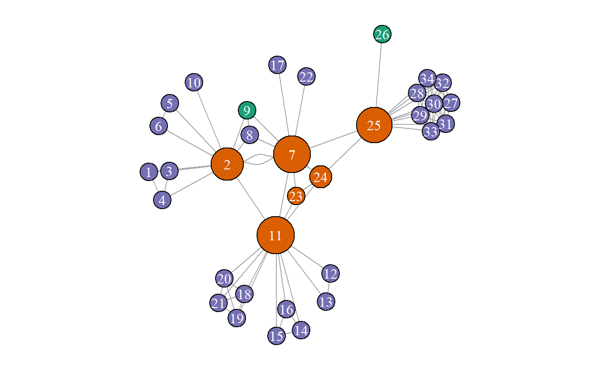

13 Ejemplos Practicos
Lo que sigue es una serie de descripciones generales de proyectos de análisis de redes generadas por los estudiantes que han participado en clases realizadas conjuntamente por NPS y ESGE.
Informe de la Red Criminal en la República de Panamá
La red identificada cuyo nombre es “Calor Calor,” la cual mantiene con organizaciones criminales en Colombia y México. Esta organización opera principalmente en Panamá, Centroamérica y Suramérica.

La banda criminal “Calor Calor” se dedica a actividades tales como:
- Robo: Los mismos estuvieron en el robo al Banco Internacional de China por 2.5 millones de dólares en la Provincia de Colon en el año 2005 (“Grupos de panamá,” 2020).
- Homicidios: Tribunales judiciales han confirmado que varios de sus miembros estuvieron involucrados en un homicidio con arma de fuego en el año 2014 en la Provincia de Colón (“Marshall tendrá que pasar 25 años en la celda fría,” 2020).
- Tráfico de Armas: En el año 2015, autoridades de policía han dado con la captura de armas de grueso calibre asociadas con miembros de esta banda criminal (Cañizales, 2015).
- Tráfico de Droga: Se han dedicado al trafico internacional de drogas desde Colombia para transportarla hasta las costas y puertos de Panamá para luego llevarlas a los carteles de Sinaloa, México (“Mayoría de detenidos en punta coco, ligada a clan úsuga y cartel de sinaloa,” 2019).
- Pandillerismo: Sus actividades de pandillerismo se han extendido a provincias centrales (Elena, 2017).
El (los) objetivo(s) del grupo de investigadores fue definir la estructura de la red y comenzar a cuantificar los lazos ilícitos que unen a miembros de esta organización criminal, Calor Calor, dentro del área de operaciones de la República de Panamá. Este estudio aprovechó los datos de código abierto para los años 2000 a 2020.
13.0.1 Libro de Códigos
13.0.1.1 Relaciones
Todas la relaciones (modo-uno o dos) han sido ponderadas en este analysis, definido como la fuerza o importancia que mantiene un nodo determinado respecto a otros. Los pesos son defindos utilizando la siguiente escala: 3 como alto valor, 2 como valor medio y 1 como valor mínimo.
13.0.1.1.1 Persona-a-persona (modo-uno)
- Tipo de Actividad Criminal: se interpreta como actores connectados por participación conjunta en una actividad que constituye un delito, el cual puede pertenecer a los siguientes tipos o clasificaciones de acuerdo con su naturaleza:
- Homicidio
- Droga
- Asociación Criminal
- Robo
- Blanqueo de Capitales
- Pandillerismo
- Tráfico Ilegal de Armas
- Evasión de Centros Penitenciarios
- Colaboración desconocida
13.0.1.1.2 Persona-a-Ubicación (modo-dos)
- Provincia: se puede interpretar como la división gubernamental o administrativa en que se divide un espacio territorial de un estado. Esta relación une personas a una ubicación el area de estudio. Para este trabajo se tomaron en cuenta las siguientes provincias de la Republica de Panamá.
- Panamá
- Colon
- Coclé
- Panamá Oeste
13.0.1.1.3 Persona-a-Evento (modo-dos)
- Tipo de Actividad Criminal: se interpreta como actores connectados a eventos criminales que constituyen un delito, el cual puede pertenecer a los siguientes tipos o clasificaciones de acuerdo con su naturaleza:
- Homicidio
- Droga
- Asociación Criminal
- Robo
- Blanqueo de Capitales
- Pandillerismo
- Tráfico Ilegal de Armas
- Evasión de Centros Penitenciarios
- Colaboración desconocida
13.0.1.2 Atributos
- Tipo de Actor
- Personas: Se considera a un ser que pertenece a la especie del tipo humano.
- Evento: Se refiere a cualquier acto que vaya en contra las normas jurídicas en donde se comete un delito.
- Rol de Persona:
- Líder: son las personas que dentro de una organización criminal ejercen mando o dan ordenes a sus subordinados.
- Operador: Se puede interpretar como una persona que obedece ordenes dentro de un grupo delincuencial; es decir, no tiene mando.
- Colaborador: en este trabajo, se define como una persona que mantiene cierto grado de colaboración, asistencia, apoyo con una organización de forma no precisada.
- Sexo de la Persona:
- Hombre: Una persona con características masculinas. También se puede entender varón o macho.
- Mujer: Se refiere a una persona del sexo femenino.
13.0.2 Mapa de red
El siguiente sociograma de red es el resultado de proyectar datos de dos modos y unificar todas las relaciones. Por tanto, el resultado final es una red de actores de un solo modo. Esta banda criminal mantiene 34 personas quienes han estado involucrado en 21 eventos criminales. Esta red mantiene una densidad de 0.148 y un diametro de 8. Lo cual sugiere una red dispersa.
Los nodos se han sido coloreado de acuerdo con la función de cada persona dentro de la red. Los nodos morados son “operadores,” los “líderes” son verdes y los “colaboradores” son rojos. Los datos registrados sugieren que la red Calor Calor está conectada por un conjunto de nodos con alta centralidad de intermediación. Estos nodos parecen formar el tejido conectivo central que une múltiples subconjuntos en la periferia.
